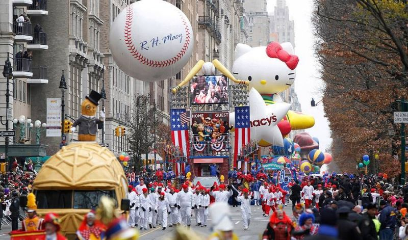

Macy's Thanksgiving Day Parade

The Macy's Thanksgiving Day Parade is the largest parade in the world. It always takes place in Manhattan and it's been a tradition since 1924. The parade inlcudes floats, marches, perfomers and, of course, the new yorkers and tourists that attend. It's one of the most popular, fun and free events in NYC that everyone enjoys!
When:
Thursday, November 22, 2018
9:00AM - 12:00PM
Location:
Starts at 77th Street and Central Park West
Ends at 34th Street and 7th Avenue in front of Macy's Herald Square